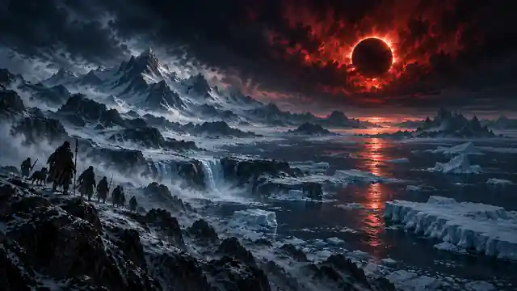

World
Glacial horizons, scarce food, dangerous predators, displaced herds, and fragile migration corridors make movement a question of collective survival.

Prequel · Late Pleistocene
Across an ice-age landscape, people survive by guarding fire, territory, and bloodline. When the sky changes and the herds begin moving, that old certainty starts to fail.
Survival · migration · stewardship
The old order
Fire is warmth, memory, property, and political power. The strongest hunters and clans appear best equipped to protect the present—but a worsening environment demands cooperation that possession alone cannot provide.
Atuun learns to read animal movement, ice, water, and inherited routes differently from those who would remain and defend the last secure ground. His challenge is not simply to lead people south, but to prove that knowledge and survival can be shared without becoming another form of domination.
Glacial horizons, scarce food, dangerous predators, displaced herds, and fragile migration corridors make movement a question of collective survival.
A culture built around guarded flame and defended territory must decide what can be surrendered, shared, or carried forward when staying becomes more dangerous than leaving.
Does the ability to seize, protect, or possess something give anyone the right to decide who receives it—and who is left behind?